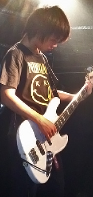
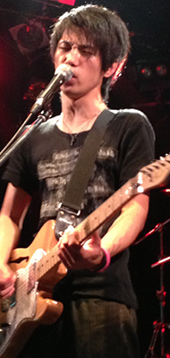
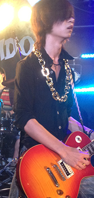

L⇒R Bass Yuto Guitar&Vocal Seita Lead Guitar Ta-chan
Guitar & VocalのSeitaを中心に活躍するロックバンド
某音楽専門学校の生徒を中心に構成しており、その演奏力やリフのよさには定評がある
バンド名の”0”から”∞”に広がる音楽性を目指して、自らのジャンルを"Alternative Pop Rock"と称している
- 田嶋清太郎 | Seitaro Tashima
-
1991年4月21日生まれ。おうし座。B型。
趣味：映画、動画、深夜番組、漫画(平日のBOOK OFF巡り) - 羽渕樹弥 | Tatsuya Habuchi
-
1992年5月22日生まれ。ふたご座。B型。
趣味：模様替え、vivienne westwood収集、ぬいぐるみ収集、PC編集、ベッド篭り - 河本勇人 | Yuto Kawamoto
-
1994年3月28日生まれ。おひつじ座。O型。
趣味：松尾芭蕉ごっこ
- 2012年
-
10月18日 サポートドラマーにキャンを迎えて活動再開
-
9月5日 1st Single "Silence Response"リリース 初のレコ発＆企画を成功させる
２年半ドラムを務めたSho-chan脱退 - 8月20日 バンド名表記を"ZERO MUGEN"に変更
- 4月25日 新歓をうろついていたBa.Yuto加入
- 3月 Ba.イチローがエンジニアの活動に専念するため脱退
- 2011年
- 6月 別のバンドでSeitaと活動していたGt.Ta-chanが加入
- 5月 Gt.23が就職活動のため脱退
-
4月 高校時代からベースを担当していたsubaruが抜ける
ギターエンジニア専攻のイチローを新ベースに迎えオリジナルを中心に活動を重ねる - 2010年
- 12月 オリジナル曲制作にとりかかり、Gt.23を迎える
- 10月 専門学校の文化祭に出るためBa.subaru、Dr.Sho-chanと共に"ゼロムゲン"を再結成
- 2008年
-
6月 高校の文化祭のライブに出るためにSeitaが同期の友達を集めて"ゼロムゲン"を結成
ASIAN KUNG-FU GENERATION、BUMP OF CHICKEN、UNISON SQUARE GARDEN等のコピーバンドとして二年ほど活動